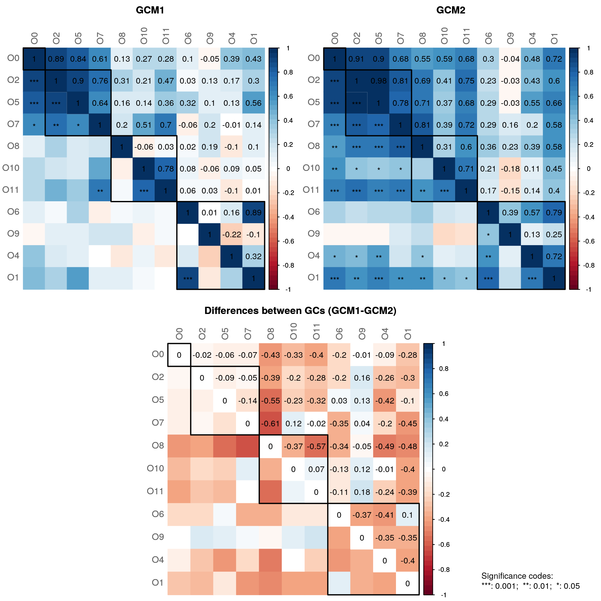
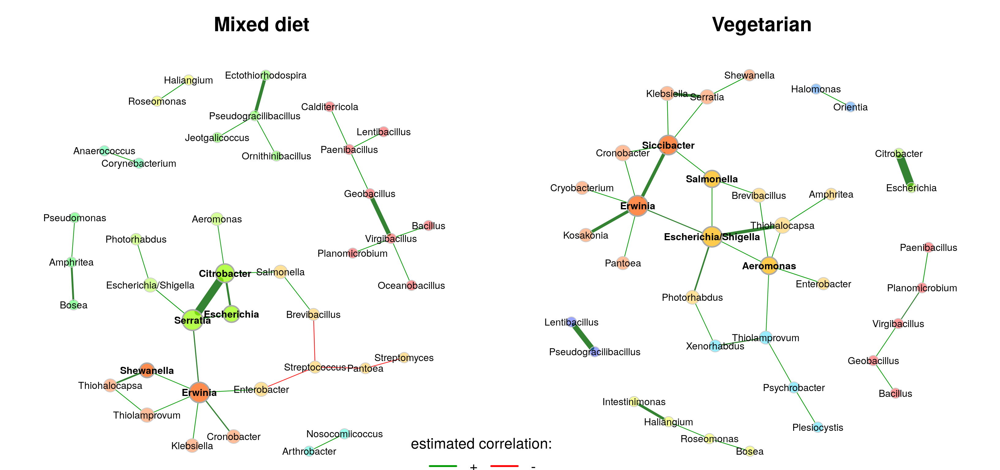
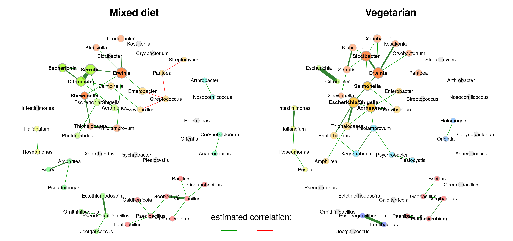
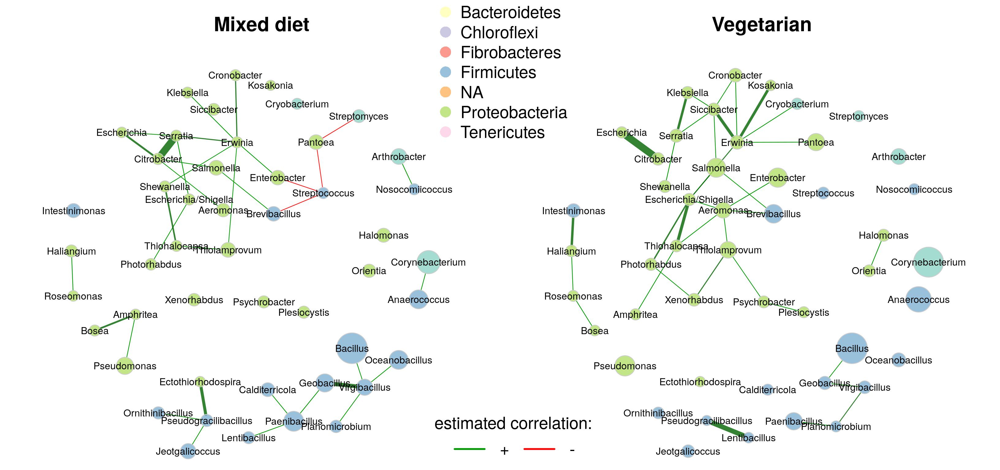
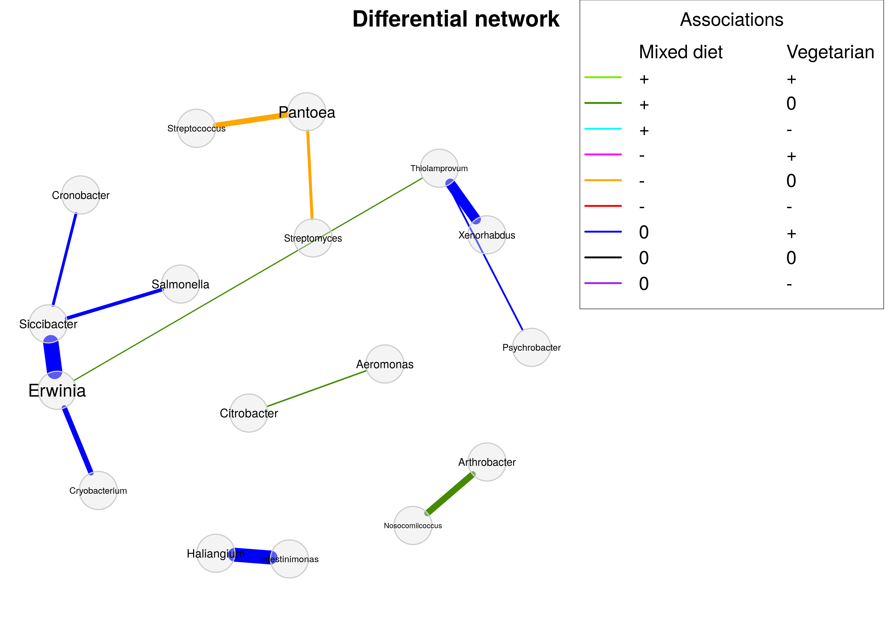

14 Network comparison
This chapter assumes that you are already familiar with how to construct and analyze a single microbial network, which is explained in Chapter 13.
Since microbial interactions are likely to change between conditions, such as between patients and healthy individuals or between different environmental states, identifying network differences between groups is often an integral secondary analysis step. Differences can be detected visually by plotting the networks side by side, or quantitatively using differential network analysis tools.
Two approaches for comparing networks between two conditions are considered in this chapter:
- Differential network analysis, which analyzes differences in network metrics and network structure.
- Differential association analysis, which focuses on differences in the strength of individual associations.
See Section 14.5 for further details on these two approaches and the methods used in this chapter.
Here we use NetCoMi (Peschel et al. 2021) for network comparison, which includes several differential network analysis approaches as well as functionality for *differential association analysis**, i.e., generating a differential network. How to install NetCoMi from GitHub is explained in Chapter 13.
The PeerJ data set (Potbhare et al. 2022) containing skin microbial profiles for 58 subjects is again used in this chapter. The dataset also includes information on the subjects’ geographic location, gender, age and diet. Whether the skin microbiome differs between people with different diets is an interesting question that will be explored in this chapter.
14.1 Data preparation
We perform the same data preprocessing steps as in Chapter 13.
data("peerj13075", package = "mia")
tse0 <- peerj13075# Agglomerate to genus level
tse <- agglomerateByRank(tse0, rank = "genus")
# Add relative abundances
tse <- transformAssay(tse,
assay.type = "counts",
method = "relabundance",
MARGIN = "samples")
# Filter by prevalence
tse <- subsetByPrevalent(tse,
prevalence = 0.2,
detection = 0,
assay.type = "relabundance")
# Add log10-transformed abundances
tse <- transformAssay(tse, method = "log10", pseudocount = 1)
# Add clr-transformed abundances
tse <- transformAssay(tse, method = "clr", pseudocount = 1)Based on “Diet”, the tse object is then split into two groups: One with mixed diet subjects, and one with vegetarian subjects. Both subsets have nearly the same sample size and are therefore comparable.
14.2 Network learning and analysis
The approach starts again with network construction and analysis, but this time we pass the two data sets to netConstruct to perform a network comparison.
The rep.num argument is set to 10 to perform only 10 repetitions in the model selection approach. This speeds up the permutation tests performed later, and has a negligible effect for this data set.
spring_net_diet <- netConstruct(data = tse_list$Mixed,
data2 = tse_list$Veg,
taxRank = "genus",
filtTax = "highestFreq",
filtTaxPar = list(highestFreq = 100),
measure = "spring",
measurePar = list(nlambda = 20,
rep.num = 10,
thresh = 0.05,
Rmethod = "approx"),
sparsMethod = "none",
dissFunc = "signed",
verbose = 3,
seed = 13075)All network measures are now computed for both networks. Also, both GCMs are plotted together with a third matrix containing the differences between the GCMs and significance codes that express if the differences are significantly different from zero.
spring_netprops_diet <- netAnalyze(spring_net_diet,
clustMethod = "cluster_fast_greedy",
hubPar = "eigenvector",
normDeg = FALSE)
In both of the networks, some graphlet correlations are significantly different from zero. However, none of the correlations are significantly different between the groups.
##
## Component sizes
## ```````````````
## Mixed diet:
## size: 18 8 4 3 2 1
## #: 1 1 1 1 3 43
## Vegetarian:
## size: 21 5 4 2 1
## #: 1 1 1 3 46
## ______________________________
## Global network properties
## `````````````````````````
## Largest connected component (LCC):
## Mixed diet Vegetarian
## Relative LCC size 0.21951 0.25610
## Clustering coefficient 0.10393 0.22433
## Modularity 0.51500 0.47707
## Positive edge percentage 80.00000 100.00000
## Edge density 0.13072 0.12381
## Natural connectivity 0.07312 0.06253
## Vertex connectivity 1.00000 1.00000
## Edge connectivity 1.00000 1.00000
## Average dissimilarity* 0.96009 0.96154
## Average path length** 2.22768 2.24622
##
## Whole network:
## Mixed diet Vegetarian
## Number of components 50.00000 52.00000
## Clustering coefficient 0.07506 0.16530
## Modularity 0.75184 0.66821
## Positive edge percentage 88.57143 100.00000
## Edge density 0.01054 0.01084
## Natural connectivity 0.01342 0.01347
## -----
## *: Dissimilarity = 1 - edge weight
## **: Path length = Units with average dissimilarity
##
## ______________________________
## Clusters
## - In the whole network
## - Algorithm: cluster_fast_greedy
## ````````````````````````````````
## Mixed diet:
## name: 0 1 2 3 4 5 6 7 8 9
## #: 43 8 6 6 6 4 3 2 2 2
##
## Vegetarian:
## name: 0 1 2 3 4 5 6 7 8
## #: 46 9 8 4 5 4 2 2 2
##
## ______________________________
## Hubs
## - In alphabetical/numerical order
## - Based on empirical quantiles of centralities
## ```````````````````````````````````````````````
## Mixed diet Vegetarian
## Citrobacter Aeromonas
## Erwinia Erwinia
## Escherichia Escherichia/Shigella
## Serratia Salmonella
## Shewanella Siccibacter
##
## ______________________________
## Centrality measures
## - In decreasing order
## - Centrality of disconnected components is zero
## ````````````````````````````````````````````````
## Degree (unnormalized):
## Mixed diet Vegetarian
## Erwinia 6 6
## Citrobacter 4 0
## Serratia 4 3
## Streptococcus 3 0
## Pantoea 2 1
## ______ ______
## Erwinia 6 6
## Aeromonas 1 5
## Escherichia/Shigella 2 5
## Siccibacter 0 5
## Salmonella 2 3
##
## Betweenness centrality (normalized):
## Mixed diet Vegetarian
## Erwinia 0.60294 0.54737
## Serratia 0.41912 0.1
## Streptococcus 0.27941 0
## Enterobacter 0.24265 0
## Citrobacter 0.24265 0
## ______ ______
## Erwinia 0.60294 0.54737
## Escherichia/Shigella 0.11765 0.53158
## Aeromonas 0 0.36842
## Siccibacter 0 0.3
## Thiolamprovum 0 0.20526
##
## Closeness centrality (normalized):
## Mixed diet Vegetarian
## Erwinia 0.85251 0.80605
## Serratia 0.78452 0.56308
## Citrobacter 0.71265 0
## Enterobacter 0.64822 0.49217
## Streptococcus 0.61535 0
## ______ ______
## Escherichia/Shigella 0.57246 0.80747
## Erwinia 0.85251 0.80605
## Aeromonas 0.4768 0.74282
## Siccibacter 0 0.72705
## Salmonella 0.57364 0.66777
##
## Eigenvector centrality (normalized):
## Mixed diet Vegetarian
## Serratia 1 0.41577
## Erwinia 0.97703 1
## Citrobacter 0.80991 0
## Escherichia 0.60982 0
## Shewanella 0.41174 0.1238
## ______ ______
## Erwinia 0.97703 1
## Escherichia/Shigella 0.38659 0.96856
## Siccibacter 0 0.888
## Aeromonas 0.26033 0.68516
## Salmonella 0.3153 0.64405For each centrality measure, the five nodes with the highest centrality in each group are plotted by default.
We notice some differences in the network properties. The differential network analysis performed in the next section will show if the differences are significant.
14.3 Differential network analysis
14.3.1 Visual comparison
We start with a visual comparison of the two networks using NetCoMi’s plot function. The same configuration as in Chapter 13 is used.
plot(spring_netprops_diet,
repulsion = 0.97,
rmSingles = TRUE,
labelScale = FALSE,
nodeSize = "eigenvector",
nodeSizeSpread = 2,
nodeColor = "cluster",
sameColThresh = 2,
hubBorderCol = "darkgray",
cexNodes = 2,
edgeTranspHigh = 20,
title1 = "Mixed diet",
title2 = "Vegetarian",
showTitle = TRUE,
cexTitle = 2,
mar = c(1, 4, 4, 4))
# Overlay a transparent plot on which the legend is plotted
par(fig=c(0, 1, 0, 1), oma=c(0, 0, 0, 0), mar=c(0, 0, 0, 0), new=TRUE)
plot(0, 0, type='n', bty='n', xaxt='n', yaxt='n')
legend(-0.2, -0.9, cex = 1.5, title = "estimated correlation:",
legend = c("+","-"), lty = 1, lwd = 3, col = c("#009900","red"),
bty = "n", horiz = TRUE)
The layout is computed separately for each network, making it difficult to visually compare certain associations. It is therefore recommended to use the same layout for both groups (argument sameLayout). Instead of simply copying one layout to the other network, we set layoutGroup to “union”. This ensures that the nodes are placed as optimally as possible for both networks.
plot(spring_netprops_diet,
sameLayout = TRUE,
repulsion = 0.95,
rmSingles = "inboth",
labelScale = FALSE,
nodeSize = "eigenvector",
nodeSizeSpread = 2,
nodeColor = "cluster",
sameColThresh = 2,
hubBorderCol = "darkgray",
cexNodes = 2,
edgeTranspHigh = 20,
title1 = "Mixed diet",
title2 = "Vegetarian",
showTitle = TRUE,
cexTitle = 2,
mar = c(1, 4, 4, 4))
# Add legend
par(fig=c(0, 1, 0, 1), oma=c(0, 0, 0, 0), mar=c(0, 0, 0, 0), new=TRUE)
plot(0, 0, type='n', bty='n', xaxt='n', yaxt='n')
legend(-0.2, -0.8, cex = 1.7, title = "estimated correlation:",
legend = c("+","-"), lty = 1, lwd = 3, col = c("#009900","red"),
bty = "n", horiz = TRUE)
A few notes:
- Differences in the edge weights can now be seen at first glance. For example, Serratia and Citrobacter are strongly associated in the mixed diet group, but not at all in the vegetarian group.
- Clusters must share at least two nodes (
sameColThreshargument) to be colored equally in both networks, which is why the color of some clusters differs between the groups. - The clustering generally differs markedly. In particular, the cluster assignment of many of the nodes in the largest connected component differs between the two groups.
As in Chapter 13, we also generate a network plot using phylum names to color the nodes and mclr-transformed abundances to scale node sizes.
library(RColorBrewer)# Generate vector with phylum names for node coloring
phyla <- as.factor(rowData(tse)$phylum)
names(phyla) <- rowData(tse)$genus
# Create color vector
colvec <- RColorBrewer::brewer.pal(length(levels(phyla)), "Set3")
p_diet <- plot(spring_netprops_diet,
sameLayout = TRUE,
repulsion = 0.95,
rmSingles = "inboth",
labelScale = FALSE,
nodeSize = "clr",
nodeColor = "feature",
featVecCol = phyla,
colorVec = colvec,
nodeTransp = 20,
sameColThresh = 2,
highlightHubs = FALSE,
cexNodes = 2,
edgeTranspHigh = 20,
title1 = "Mixed diet",
title2 = "Vegetarian",
showTitle = TRUE,
cexTitle = 2,
mar = c(1, 4, 4, 4))
# Add legends
# Colors used in the legend should be equally transparent as in the plot
col_transp <- colToTransp(colvec, 20)
par(fig=c(0, 1, 0, 1), oma=c(0, 0, 0, 0), mar=c(0, 0, 0, 0), new=TRUE)
plot(0, 0, type='n', bty='n', xaxt='n', yaxt='n')
legend(-0.15, -0.8, cex = 1.7, title = "estimated correlation:",
legend = c("+","-"), lty = 1, lwd = 3, col = c("#009900","red"),
bty = "n", horiz = TRUE)
legend(-0.15, 1.3, cex = 1.7, pt.cex = 2.5, title = "Phylum:",
legend=levels(phyla), col = col_transp, bty = "n", pch = 16) 
14.3.2 Quantitative comparison
netCompare() enables a quantitative network comparison using comparative measures such as Jaccard’s Index, Adjusted Rand Index, and permutation tests.
To test for statistical significance of differences in network properties, we perform permutation tests with 1000 permutations. Multiple CPU cores are used to save run time. The association matrices estimated for all permutations are stored in an external file. We will reuse them later when performing differential association analysis. They could also be used to rerun netCompare() with different parameter settings.
Note that unless running on a cluster with considerably more CPU cores, a network comparison with permutation tests may take several hours. You should test the code below with a small number of permutations to make sure it works before applying it to your data.
spring_netcomp_diet <- netCompare(spring_netprops_diet,
permTest = TRUE,
nPerm = 1000,
cores = 6,
seed = 13075,
storeAssoPerm = TRUE,
fileStoreAssoPerm = "general/network_data/spring_assoPerm",
verbose = TRUE)##
## Comparison of Network Properties
## ----------------------------------
## CALL:
## netCompare(x = spring_netprops_diet, permTest = TRUE, verbose = TRUE,
## nPerm = 1000, cores = 19, libPathsClust = "/dss/dsshome1/07/di93fen/R",
## seed = 13075, storeAssoPerm = TRUE, fileStoreAssoPerm = "general/network_data/spring_assoPerm")
##
## ______________________________
## Global network properties
## `````````````````````````
## Largest connected component (LCC):
## Mixed diet Vegetarian abs.diff. p-value
## Relative LCC size 0.220 0.256 0.037 0.838162
## Clustering coefficient 0.104 0.224 0.120 0.450549
## Modularity 0.515 0.477 0.038 0.801199
## Positive edge percentage 80.000 100.000 20.000 0.000999
## Edge density 0.131 0.124 0.007 0.910090
## Natural connectivity 0.073 0.063 0.011 0.812188
## Vertex connectivity 1.000 1.000 0.000 1.000000
## Edge connectivity 1.000 1.000 0.000 1.000000
## Average dissimilarity* 0.960 0.962 0.001 0.945055
## Average path length** 2.228 2.246 0.019 0.984016
##
## Relative LCC size
## Clustering coefficient
## Modularity
## Positive edge percentage ***
## Edge density
## Natural connectivity
## Vertex connectivity
## Edge connectivity
## Average dissimilarity*
## Average path length**
##
## Whole network:
## Mixed diet Vegetarian abs.diff. p-value
## Number of components 50.000 52.000 2.000 0.93706
## Clustering coefficient 0.075 0.165 0.090 0.46254
## Modularity 0.752 0.668 0.084 0.24975
## Positive edge percentage 88.571 100.000 11.429 0.02398
## Edge density 0.011 0.011 0.000 0.97303
## Natural connectivity 0.013 0.013 0.000 0.89011
##
## Number of components
## Clustering coefficient
## Modularity
## Positive edge percentage *
## Edge density
## Natural connectivity
## -----
## p-values: one-tailed test with null hypothesis diff=0
## *: Dissimilarity = 1 - edge weight
## **: Path length = Units with average dissimilarity
##
## ______________________________
## Jaccard index (similarity betw. sets of most central nodes)
## ```````````````````````````````````````````````````````````
## Jacc P(<=Jacc) P(>=Jacc)
## degree 0.560 0.9944 0.01637 *
## betweenness centr. 0.294 0.4777 0.71860
## closeness centr. 0.560 0.9944 0.01637 *
## eigenvec. centr. 0.560 0.9944 0.01637 *
## hub taxa 0.111 0.1431 0.97399
## -----
## Jaccard index in [0,1] (1 indicates perfect agreement)
##
## ______________________________
## Adjusted Rand index (similarity betw. clusterings)
## ``````````````````````````````````````````````````
## wholeNet LCC
## ARI 0.367 0.035
## p-value 0.000 0.563
## -----
## ARI in [-1,1] with ARI=1: perfect agreement betw. clusterings
## ARI=0: expected for two random clusterings
## p-value: permutation test (n=1000) with null hypothesis ARI=0
##
## ______________________________
## Graphlet Correlation Distance
## `````````````````````````````
## wholeNet LCC
## GCD 1.5980 2.1770
## p-value 0.4226 0.7143
## -----
## GCD >= 0 (GCD=0 indicates perfect agreement between GCMs)
## p-value: permutation test with null hypothesis GCD=0
##
## ______________________________
## Centrality measures
## - In decreasing order
## - Centrality of disconnected components is zero
## ````````````````````````````````````````````````
## Degree (unnormalized):
## Mixed diet Vegetarian abs.diff. adj.p-value
## Siccibacter 0 5 5 1
## Aeromonas 1 5 4 1
## Citrobacter 4 0 4 1
## Escherichia/Shigella 2 5 3 1
## Streptococcus 3 0 3 1
##
## Betweenness centrality (normalized):
## Mixed diet Vegetarian abs.diff. adj.p-value
## Escherichia/Shigella 0.118 0.532 0.414 1
## Aeromonas 0.000 0.368 0.368 1
## Serratia 0.419 0.100 0.319 1
## Siccibacter 0.000 0.300 0.300 1
## Streptococcus 0.279 0.000 0.279 1
##
## Closeness centrality (normalized):
## Mixed diet Vegetarian abs.diff. adj.p-value
## Siccibacter 0.000 0.727 0.727 0.2676
## Citrobacter 0.713 0.000 0.713 0.9799
## Streptococcus 0.615 0.000 0.615 0.2676
## Escherichia 0.587 0.000 0.587 0.9799
## Xenorhabdus 0.000 0.527 0.527 0.2676
##
## Eigenvector centrality (normalized):
## Mixed diet Vegetarian abs.diff. adj.p-value
## Siccibacter 0.000 0.888 0.888 0.6553
## Citrobacter 0.810 0.000 0.810 1.0000
## Escherichia 0.610 0.000 0.610 1.0000
## Serratia 1.000 0.416 0.584 1.0000
## Escherichia/Shigella 0.387 0.969 0.582 1.0000
##
## _________________________________________________________
## Significance codes: ***: 0.001, **: 0.01, *: 0.05, .: 0.1Interpreting some results:
- Almost all global network properties are significantly different between the groups (for \(\alpha=0.1\)), thus reflecting the different overall network structure we already have seen in the network plots.
- For the Jaccard index of degree, closeness, and eigenvector centrality, the probability P(>=Jacc) is significant, meaning that the sets of the most central nodes are quite similar for these three measures. The Jaccard index for the hub nodes, on the other hand, is low because the two networks share only one hub node (“Erwinia”).
- As indicated by some similarities in the clusterings, the adjusted Rand index (ARI) of the whole network is significantly different from zero and thus from random clustering. The ARI of the largest connected component (LCC), however, is close to zero due to the different clusterings in the LCC.
- The two GCD values are significantly different from zero, indicating substantial differences in the overall network structures.
- All nodes are also tested for having significantly different centrality (only the five nodes with the highest absolute difference are shown in the summary). For \(\alpha=0.05\), some nodes have a significantly different closeness centrality, and for \(\alpha=0.1\) also a significantly different eigenvector centrality. Most of these nodes have a high centrality in the one group, but are not connected in the other group.
14.4 Differential association analysis
The diffnet() function provides statistical tests to assess whether the associations themselves are significantly different between the two groups. NetCoMi also provides a plot function to generate a differential network, where two nodes are connected if they are differentially associated between the groups.
Since we have already computed the permutation association matrices before, we can reuse them here (argument fileLoadAssoPerm).
The local false discovery rate is controlled at level 0.2 to account for multiplicity.
spring_diffnet <- diffnet(spring_net_diet,
diffMethod = "perm",
fileLoadAssoPerm = "general/network_data/spring_assoPerm",
adjust = "lfdr")Some of the unadjusted p-values are below the usual 5% significance level. However, none of the differences remain significant after adjusting for multiple testing so that the differential network would be empty.
To demonstrate the interpretation of a differential network, we set adjust to “none”, which is actually statistically incorrect.
spring_diffnet_unadj <- diffnet(spring_net_diet,
pvalsVec = spring_diffnet$pvalsVec,
diffMethod = "perm",
alpha = 0.05,
adjust = "none")The diffnet object it now plotted using NetCoMi’s plot function.
plot(spring_diffnet_unadj,
cexLabels = 2,
cexNodes = 0.7,
cexLegend = 2.5,
cexTitle = 3,
mar = c(3,2,5,15),
legendGroupnames = c("Mixed diet", "Vegetarian"),
legendPos = c(1.2,1.5),
legendArgs = list(lwd = 4),
fade = FALSE)
Edge colors represent the direction of the associations in the two groups. For example, if two OTUs are positively correlated in the mixed diet group and uncorrelated in the vegetarian group (such as Serratia and Citrobacter), the edge color is dark green.
14.5 Network comparison methods
While many approaches exist for the detection of differential correlations, e.g. (Yu et al. 2019; McKenzie et al. 2016; Siska and Kechris 2017), the literature on the more general case of differential association detection is scarce. Bhuva et al. (2019) compare various methods in a simulation study, which again includes many differential correlation approaches, but also more general methods such as latent differential graphical models. Gill, Datta, and Datta (2010) introduce an approach to analyze whether the connectivity of individual nodes is different between two groups using permutation tests, which is applicable to any kind of association. He et al. (2019) propose a test to infer the differential network structure for two conditional dependence networks.
Performing differential network analysis is challenging because network measures do not follow classical statistical distributions. Shojaie (2021) provide an overview of differential network analysis methods, but focus only on changes in edge sets. Lichtblau et al. (2017) compare differential network analysis methods that incorporate multiple local and global network measures. Jardim et al. (2019) present a tool “BioNetStat” for differential analysis of biological networks, which is able to compare certain network measures between groups.
The NetCoMi package used for network comparison in this chapter includes the following differential network analysis approaches::
- Permutation approach to test global network measures (e.g., transitivity, connectivity, or average path length) as well as centrality measures for group differences.
- Jaccard index to assess the similarity between sets of most central nodes
- Adjusted Rand index to assess the similarity between clusterings
- Graphlet Correlation Distance (GCM)
See (Peschel et al. 2021) for an explanation of the first three approaches. The GCM was proposed by Yaveroğlu et al. (2014).
Two methods (Fisher’s z-test (Fisher 1970) and the Discordant method (Siska, Bowler, and Kechris 2016)) are available for identifying differential correlations, and permutation tests for the more general case of identifying differential associations. See (Peschel et al. 2021) for details. NetCoMi offers also a function for plotting a differential network.